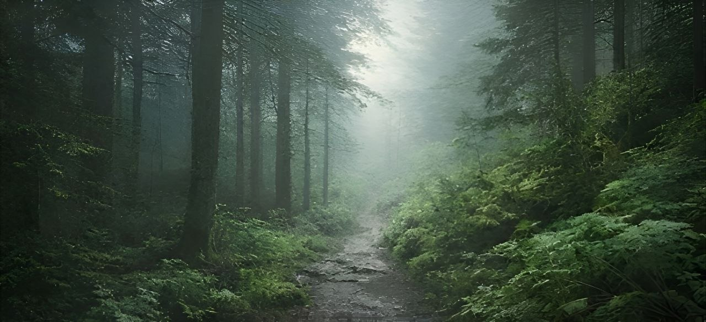
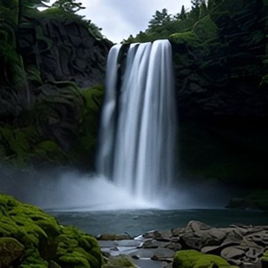
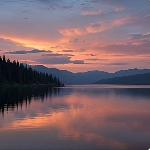
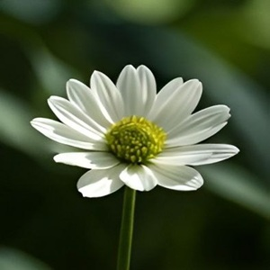

About Us
Welcome to Nature's Beauty, where our passion for the natural world drives
everything we do. Our mission is to capture and share the breathtaking beauty
of nature through the lens of our cameras, inspring others to appreiate

Our Mission
At Nature's Beauty, our mission is to bring the wonders of the natural world to our
audience. Through stunning and evocative photography, we aim to inspire a deep
appreciation for nature and encourage the protection of our planet's precious
landscapes. We believe that by showcasing the beauty of our world, we can con-
tribute to greater awarenesss and conservation efforts.



Our Story
Nature's Beauty was founded by a group of passionte nature photographers, who
shared a common love for the outdoors and a desire to capture the Earth's natural
wonders. What started as a hobby quickly turned into a mission as we set out to
explore and photograph the most beautiful and remote locations we could find.
Over the years, we've traveled to dense forests, towering mountains, serene lakes,
and star-filled skies, always in search of that perfect shot that captures the essence
of the natural world.